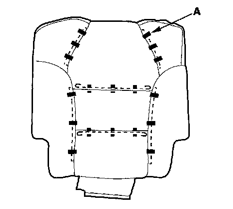

Second Row Seat Cover
Second Row Seat Cover ReplacementNOTE:
- Put on gloves to protect your hands.
- Take care not to tear the seams or damage the seat covers.
Seat-back Cover
1. Remove the second row seat.
2. Remove the head restraint.
3. From under the seat cushion, release the hooks (A) of the back cover carpet (B) from the seat cushion frame, then pull the carpet back.
4. With seat heater; Disconnect the seat cushion heater connector (C) and remove the wire tie (D).
5. Remove the third row seat access knob (A). Peel off the label (B) and remove the screw (C), then remove the third row seat access trim (D) by detaching the clips (E).

6. Fold the seat-back forward fully, detach the clips, and remove the back cover (A).

7. Release all of the hooks (A) and remove the wire ties (B) from the back of the seat-back, then pull back the seat-back cover. If equipped, detach the seat-back heater harness clip (C) from the seat-back frame.
8. While pulling the recline lever (A), gently pull out the recliner lever upper housing (B) to release the hooks (C), then remove it.
9. Release the hook strips (A).
10. Pull out the seat-back pad (A) from the seat-back frame (B), then pinch the end of the head restraint guides (C) to remove them.
11. Pull out the head restraint guides (A).
12. Remove the seat-back cover/pad (A) from the seat-back frame (B).

13. Pull back the edge of the seat-back cover all the way around, and release the clips (A), then remove the seat-back cover.
14. Right second row seat: If necessary, remove the seat-back damper (A) from the seat-back frame.
15. Install the seat-back cover in the reverse order of removal, and note these items:
- To prevent wrinkles when installing a seat-back cover, make sure the material is stretched evenly over the pad before securing the hooks, hook strips, and clips.
- Replace any clips (A) you removed with new ones using commercially available upholstery ring pliers (B).
- Replace the wire ties you removed with new ones.
- With seat heater: Make sure the seat heater connector is plugged in properly.
Seat Cushion Cover
1. Remove the second row seat.
2. Remove the recline outer cover:
- Left second row seat.
- Right second row seat.
3. From under the seat cushion, release the hooks (A) of the back cover carpet (B) from the seat cushion frame, then pull the carpet back.
4. With seat heater: Disconnect the seat-back heater connector (C), detach the seat heater connector (D), and remove the wire ties (E).
5. Release all of the clips (A) and hook strips (B) from under the seat cushion (C).
6. Remove the seat cushion cover/pad (A) from the seat cushion frame (B).
7. Pass the retainers (A) through the slots in the seat-back pad (left seat cushion). Pull back the edge of the seat cushion cover all the way around, and release the clips (B), then remove the seat cushion cover.
8. Install the seat-back cover in the reverse order of removal, and note these items:
- To prevent wrinkles when installing a seat-back cover, make sure the material is stretched evenly over the pad before securing the hooks, hook strips, and clips.
- Replace any clips (A) you removed with new ones using commercially available upholstery ring pliers (B).
- Replace the wire ties you removed with new ones.
- With seat heater: Make sure the seat-back heater connector is plugged in properly.